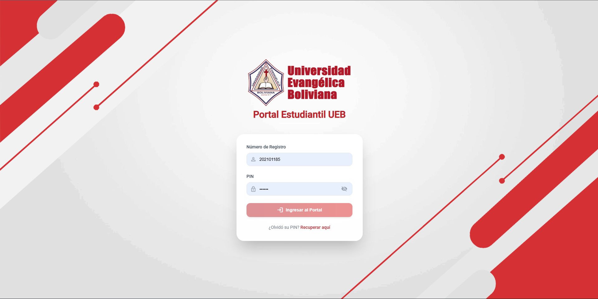
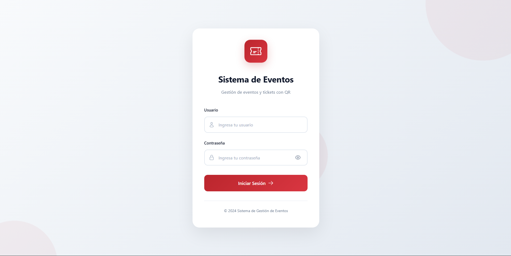
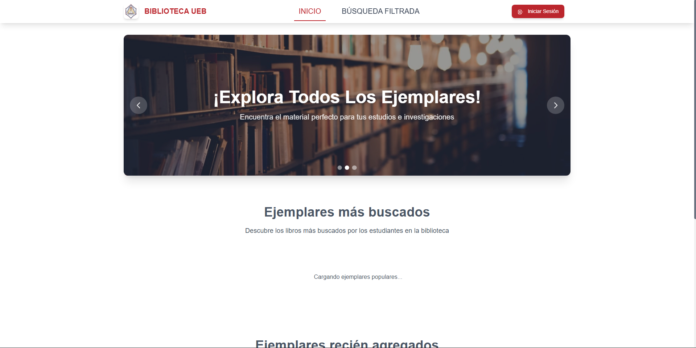
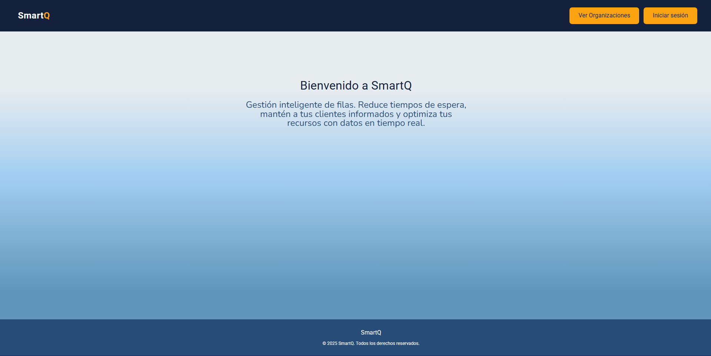
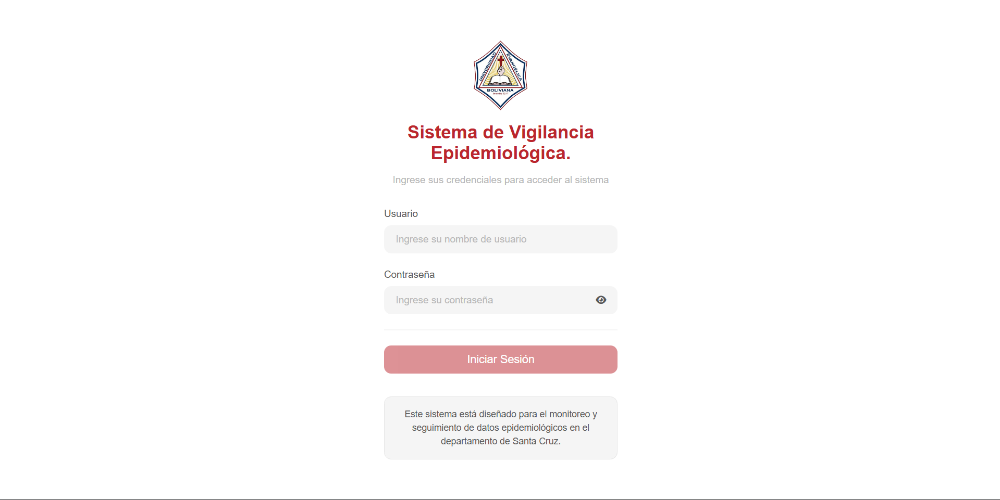
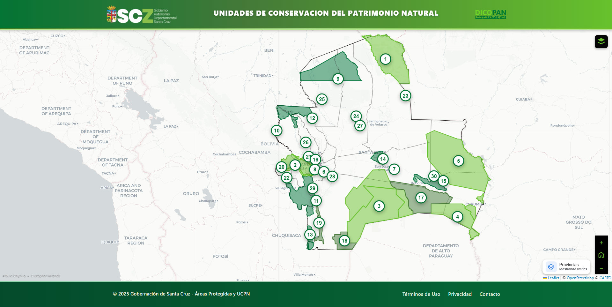

Soy Cristopher Miranda
Desarrollador de Software enfocado en Backend con experiencia práctica construyendo y desplegando 3 APIs RESTful en producción utilizando ASP.NET Core Web API (.NET 6/8) y Spring Boot (Java 17). Competente en Arquitectura Limpia, Entity Framework Core, Dapper, patrones event-driven e integración con bases de datos legacy (Informix/ODBC). Experiencia con Docker, Azure, Nginx, systemd, SSL y administración de servidores Linux.
Mis proyectos

Portal Estudiantil
Portal web para todo el cuerpo estudiantil de la UEB, construido con ASP.NET Core Web API (.NET 8), Arquitectura Limpia, Dapper e Informix.

Sistema de Gestión de Eventos
Sistema de check-in y registro de eventos mediante QR con ASP.NET Core Web API, Entity Framework Core y SQL Server.

Sistema de Gestión Bibliotecaria
Ciclo completo del libro con control de acceso basado en roles, ASP.NET Core Web API, Dapper, PostgreSQL y JWT.

SmartQ — Colas Virtuales
Sistema de gestión de colas para atención al cliente con Java 17, Spring Boot 3, Spring Modulith, PostgreSQL y Apache Kafka.

Mapa Epidemiológico
Sistema de vigilancia epidemiológica con mapas de calor, ASP.NET Core Web API, Entity Framework Core y MySQL.

Mapeo GIS — Áreas Protegidas
Aplicación web GIS para la Gobernación de Santa Cruz con Angular, Leaflet y GeoJSON.
Tecnologías
Experiencia
Construí y desplegué el Portal Estudiantil que sirve a todo el cuerpo estudiantil de la universidad, utilizando ASP.NET Core Web API (.NET 8) con Arquitectura Limpia y Dapper, integrando una base de datos legacy Informix mediante ODBC en Linux.
Desarrollé el Sistema de Gestión de Eventos para check-in y registro de eventos mediante QR utilizando ASP.NET Core Web API con Entity Framework Core y SQL Server.
Desplegué 3 APIs en producción en VMs Ubuntu Server vía SSH, configurando demonios systemd, Nginx como reverse proxy con SSL (Let's Encrypt) y drivers Informix Client SDK/ODBC. También desplegué en Azure App Services.
Contáctame
¿Tienes un proyecto en mente o te interesa mi trabajo?
Contáctame para cotizar el proyecto que tengas en mente o si estás interesado en mi perfil, mándame un correo para agendar una reunión rápida.